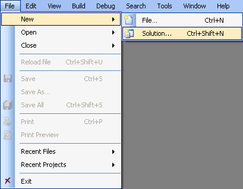
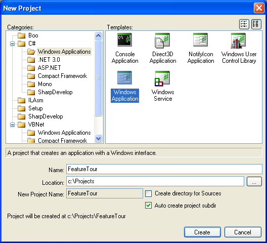
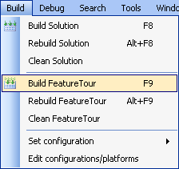
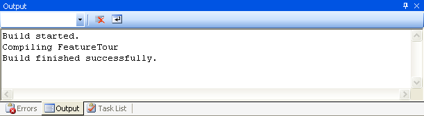
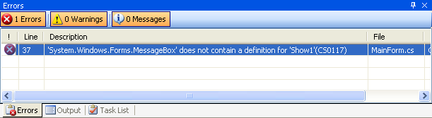
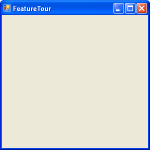
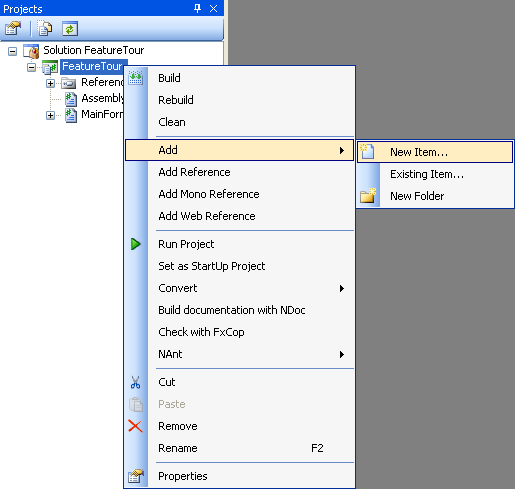
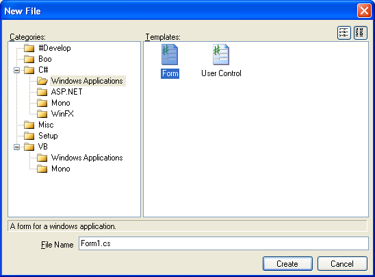

{kind=link}

With SharpDevelop you can create and develop many different types of project:
The following sections will walk you through creating a Windows Application for the C# language.
To create a new Windows Application, from the File menu, select New and then select Solution....

This opens the New Project dialog box.

From this dialog you can choose from many different project templates that are grouped into different categories. Expand the C# category, select the Windows Applications category, and then select Windows Application from the list of available templates. Type in a name for the project and choose where you would like the project to be created. Click the Create button to generate the project. The project will then be opened by SharpDevelop ready for you to start developing.
Click the above image to see a larger version with added notes explaining the various parts of the user interface.
From the Build menu select either Build Solution or Build <Your Project Name>.

Build messages will be displayed in the Output window as the build progresses.

When the build is completed any errors will be listed in the Errors window.

From the Debug menu select Run or Run without debugger.
Your application will then be started and its main form will be displayed.

SharpDevelop provides many different types of file templates which you can add to your project:
To add a new form to your Windows Application, open the Project Explorer, if it is not already open, by selecting Projects from the View menu.

In the Projects Explorer select the name of your project, right click, select Add and then New Item....

This opens the New File dialog box.

Expand the C# category, select the Windows Applications category, and then select Form from the list of available templates. Type in the desired name of the file and then click the Create button to add the new form to your project.
In the next section you will see how to visually design your forms.